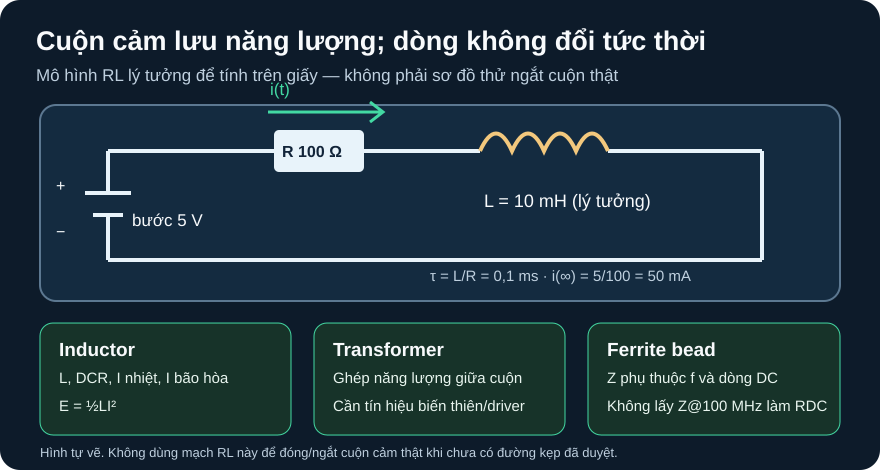

Cuộn Cảm, Biến Áp & Ferrite Bead
Từ năng lượng từ trường và dòng không đổi tức thời đến quyết định chọn phần tử theo nhiệt, bão hòa và tần số.
- Phân biệt cuộn cảm trữ năng lượng, biến áp ghép năng lượng giữa cuộn và bead cản/suy hao cao tần.
- Đọc đúng
L,RDC, dòng theo tăng nhiệtIR, dòng bão hòaISATvà điều kiện đo của part. - Tính năng lượng
½LI², hằng số thời gianL/Rvà bảng dòng theo thời gian của mạch RL lý tưởng. - Giải thích vì sao ngắt dòng cuộn cảm cần đường kẹp được thiết kế, và vì sao
Z@100 MHzcủa bead không phải điện trở DC.
Tiếp sau D10: D10 giới thiệu cảm kháng và quá độ RL. A06 thêm ba quyết định thường bị đánh đồng: cuộn công suất có giới hạn nhiệt khác giới hạn bão hòa; biến áp cần từ thông biến thiên và mạch lái; ferrite bead có trở kháng phụ thuộc tần số lẫn dòng DC.
1. Ba phần tử từ không hoán đổi
| Phần tử | Mô hình có ích | Cần tra khi chọn |
|---|---|---|
| Cuộn cảm công suất | Lưu năng lượng E=½LI²; chống thay đổi dòng trong miền chưa bão hòa. Có điện trở dây RDC. | L ở tần số/mức đo, dung sai, IR theo tăng nhiệt, ISAT theo sụt L, DCR, tần số tự cộng hưởng, kích thước và nhiệt PCB. Würth 7687714471, rev. 001.003 (2019-05-06), tr. 1–2. |
| Biến áp | Hai hoặc nhiều cuộn ghép qua lõi, truyền năng lượng bằng từ thông biến thiên; tỉ số vòng dây liên quan tỉ số áp trong mô hình lý tưởng. Cách ly galvanic tùy cấu trúc và định mức. | Tỉ số, điện cảm từ hóa/rò, cách điện, tần số, dòng, sơ đồ chân, loại driver, chỉnh lưu và điều kiện an toàn. TI SN6501 datasheet, §8.2 là ví dụ hệ driver–transformer; sơ đồ chân/net của phiên bản PDF này chưa đối chiếu trực tiếp, nên bài chỉ mô tả khối. |
| Ferrite bead | Một phần tử nối tiếp đường nguồn/tín hiệu, trở kháng có vùng cảm và vùng tổn hao theo tần số; không được xem là một điện trở 70 Ω DC. | Z(f), DCR, rated current theo tăng nhiệt, thay đổi trở kháng dưới DC bias, cộng hưởng với tụ và layout. Würth 742792510, rev. 006.000 (2021-10-13), tr. 1–2; ADI AN-1368, Fig. 2, 7–9, 14–16. |
Không cấp DC trực tiếp vào biến áp và mong có điện áp ra ổn định. Trong hệ cách ly điện tử, driver tạo xung biến thiên, biến áp ghép năng lượng, phía ra cần chỉnh lưu/lọc và có thể cần điều chỉnh. Tỉ số vòng dây 1:2 không tự cho “5 V” nếu chưa có dạng xung, tổn hao, tải và sơ đồ part cụ thể. Bài này không công bố chân/nối dây của SN6501 hoặc biến áp.
2. Đọc một cuộn thật: IR khác ISAT
Würth WE-PD HV 7687714471, rev. 001.003, bảng Electrical Properties tr. 1 ghi L=470 µH ±20% tại 100 kHz/250 mV; IR=0,6 A max theo tiêu chí tăng nhiệt ΔT=40 K; ISAT=0,8 A typ khi độ giảm L còn dưới 10%; RDC=1,25 Ω typ và 1,45 Ω max tại 20 °C. Đường L(I) ở tr. 2 là typical. Giá trị ISAT typ không phải giới hạn bảo đảm cho mọi mẫu, còn IR là bài toán nhiệt theo điều kiện hãng; muốn dùng phải xét môi trường và PCB.
Kiểm tổn hao dây tại dòng giả định 0,2 A, dùng DCR max ở 20 °C làm mốc: PCu≈I²RDC=0,2²×1,45=0,058 W. Đây không phải nhiệt độ cuộn khi chạy, vì DCR đổi theo nhiệt và còn tổn hao lõi/ripple. Không dùng chữ “HV” trong tên dòng để gợi ý nối với nguồn lưới. Bài RL dưới đây dùng L=10 mH lý tưởng, hoàn toàn không phải part 470 µH này.
Würth WE-CBF 742792510, rev. 006.000, tr. 1–2 ghi Z(100 MHz)=70 Ω ±25%, RDC(max)=0,03 Ω tại 20 °C; rated current là 5 A cho ΔT=20 K và 6 A cho ΔT=40 K. 70 Ω là trở kháng AC ở 100 MHz, không thể đem nhân trực tiếp với dòng DC để tính sụt áp. ADI AN-1368, phần DC Bias và Fig. 7–9 cho thấy dòng DC có thể làm đường trở kháng của bead thay đổi mạnh; bead cộng tụ còn có thể sinh đỉnh cộng hưởng, nên nhãn trở kháng một tần số không đủ để chọn.
3. Ví dụ giải từng bước: năng lượng và quá độ RL lý tưởng

Mô tả mạch bằng chữ
Nguồn lý tưởng tăng từ 0 lên 5 V. Cực dương nối tới R 100 Ω, R nối đến cuộn cảm lý tưởng L 10 mH, đầu còn lại của L nối về GND/cực âm nguồn. Dòng tham chiếu chạy từ nguồn qua R rồi L. Không có công tắc, diode kẹp, transistor hay phần tử ký sinh trong hình; không dùng hình này để thao tác với cuộn thật.
- Giả định: ban đầu
iL(0−)=0, L và R không đổi, nguồn là bước lý tưởng; với mô hình này dòng qua L liên tục nêniL(0+)=0. - Trị cuối: trong trạng thái DC ổn định, L lý tưởng có áp bằng 0;
I∞=V/R=5/100=0,05 A=50 mA. - Hằng số thời gian:
τ=L/R=0,010/100=0,0001 s=0,1 ms. Dòng nạp theo mô hìnhi(t)=50 mA×(1−e^(−t/τ)). - Tại τ:
i(0,1 ms)=50×(1−e⁻¹)≈31,6 mA. Năng lượng ở trị cuối làE=½LI²=0,5×0,010×0,05²=12,5 µJ. Một bài toán độc lập với dòng 0,1 A qua L 10 mH cóE=50 µJ; không nhầm hai điểm dòng.
Khi muốn ngắt tải cảm thật: quan hệ vL=L·di/dt nói điện áp phụ thuộc tốc độ dòng thay đổi. Không thể dự báo một đỉnh áp cố định nếu chưa biết đường kẹp, điện dung ký sinh, công tắc và dây. Phải thiết kế đường hồi/kẹp rồi chọn diode/TVS theo áp, dòng, năng lượng và tần suất; A05 giải thích vì sao IF(AV) không đủ cho xung. Bài này **không có** bước thử đóng/ngắt cuộn thật không bảo vệ.
4. Hoạt động tái lập: bảng RL và phiếu chọn phần tử
Với
V=5 V,R=100 Ω,L=10 mH, điềnt/τ={0,1,2,5}vàoi(t)=50(1−EXP(−t/τ)) mA; lấyτ=0,1 ms. So bảng kỳ vọng dưới. Nếu dùng simulator, lưu phiên bản, netlist, bước thời gian ≤5 µs, điều kiện đầuiL=0và waveform; không gọi bảng tính là đã chạy mô phỏng.Mở PDF Würth 7687714471 và 742792510. Tạo hai hàng với mã/revision/trang,
LhoặcZ(f), DCR, dòng rated, tiêu chí nhiệt/bão hòa, điểm typical/max. Đáp án kiểm nhanh: cuộn cóIR=0,6 AgắnΔT=40 KvàISAT=0,8 A typgắn sụt L; bead có70 Ω@100 MHznhưngRDC≤0,03 Ωở 20 °C.Trên ADI AN-1368 Fig. 7–9 và 14–16, ghi hiện tượng khi tăng DC bias và khi ghép bead với tụ. Viết một câu vì sao
Z@100 MHzkhông quyết định suy hao ở tần số nhiễu khác. Với transformer, chỉ vẽ khốidriver → transformer → rectifier/filter → tải; chờ kiểm datasheet SN6501 trực tiếp trước net/pin cụ thể.
| t | t/τ | i(t) | Ghi chú |
|---|---|---|---|
| 0 ms | 0 | 0 mA | Dòng liên tục từ điều kiện đầu. |
| 0,1 ms | 1 | 31,6 mA | ≈63,2% dòng cuối. |
| 0,2 ms | 2 | 43,2 mA | ≈86,5% dòng cuối. |
| 0,5 ms | 5 | 49,7 mA | Gần 50 mA, không đúng bằng. |
Chưa có cuộn/tải thực, driver, điện áp, clamp, PCB, BOM và người duyệt. Không đưa hướng dẫn cấp DC cho biến áp hoặc ngắt dòng cuộn không bảo vệ. Nếu triển khai sau này, phải chốt part/package/revision và cách đấu của cả driver, cuộn/biến áp, diode/clamp, nguồn cách ly thấp áp; tính năng lượng/xung, đo nhiệt và kiểm PCB. Nhãn “HV” của cuộn ví dụ không là lời mời thử điện lưới.
ISAT của cuộn Würth 7687714471 không?Z(100 MHz)=70 Ω và RDC(max)=0,03 Ω ở 20 °C. Với dòng DC giả định 0,1 A, tính cận sụt áp trên dây theo DCR max ở 20 °C. Vì sao không tính 0,1×70=7 V?1. E=½×0,002×0,2²=0,00004 J=40 µJ; τ=0,002/20=0,0001 s=0,1 ms. Bài toán L=2 mH là mô hình khác; cuộn Würth có L danh định 470 µH ở điều kiện đo hãng. ISAT còn là số typical theo mức giảm L, khác dòng nhiệt.
2. Vdrop≤I×RDC(max)=0,1×0,03=0,003 V=3 mV tại điều kiện 20 °C của thông số DCR, nếu giả định điện trở không đổi. 70 Ω là độ lớn trở kháng tại 100 MHz, không phải điện trở DC; ở nhiệt khác phải kiểm DCR đổi theo nhiệt.
Rubric 4 điểm: 1 điểm sơ đồ/giả định và phân biệt model với part; 1 điểm công thức/đổi đơn vị; 1 điểm 40 µJ, 0,1 ms và 3 mV; 1 điểm giải thích IR/ISAT, Z(f)/RDC và giới hạn kiểm vật lý.